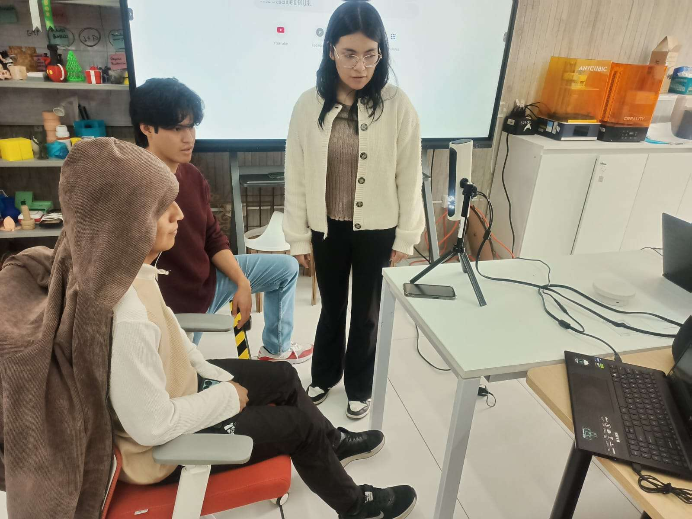
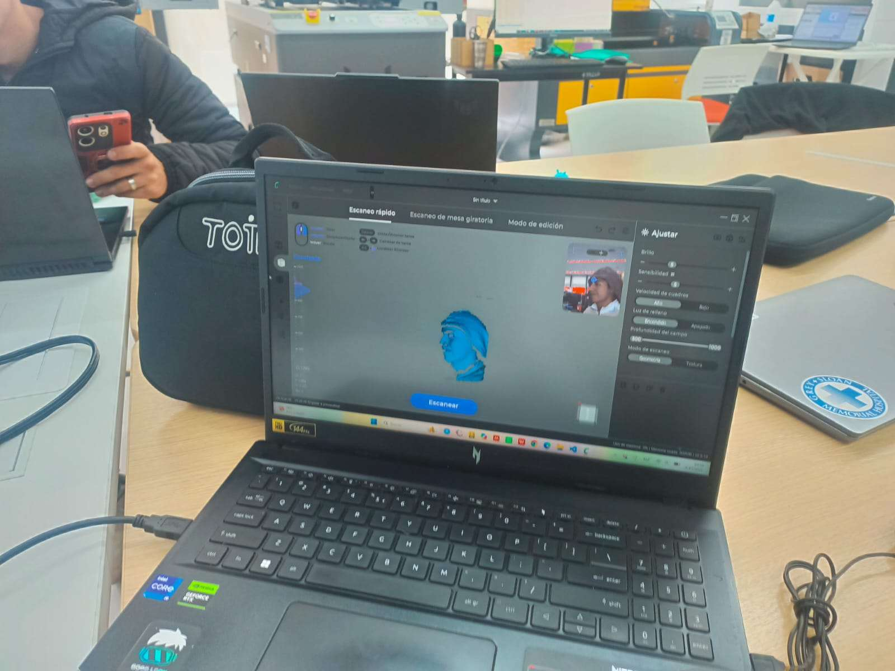
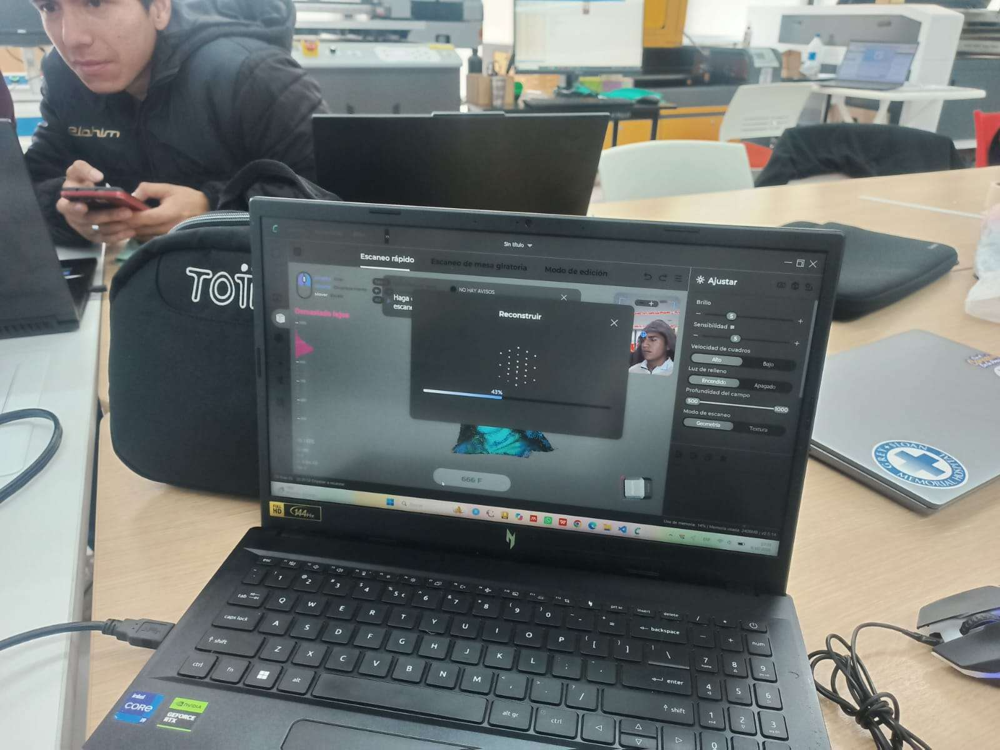
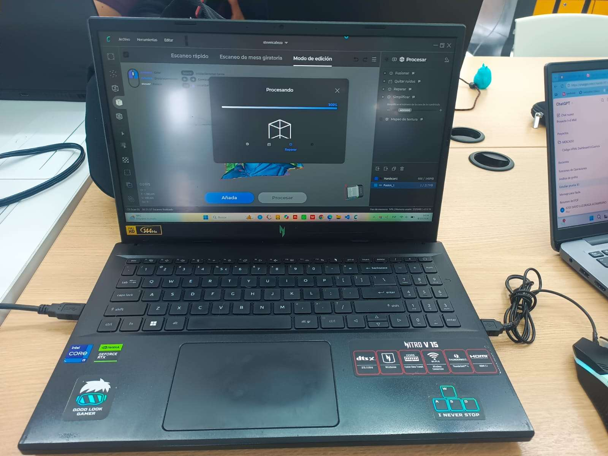
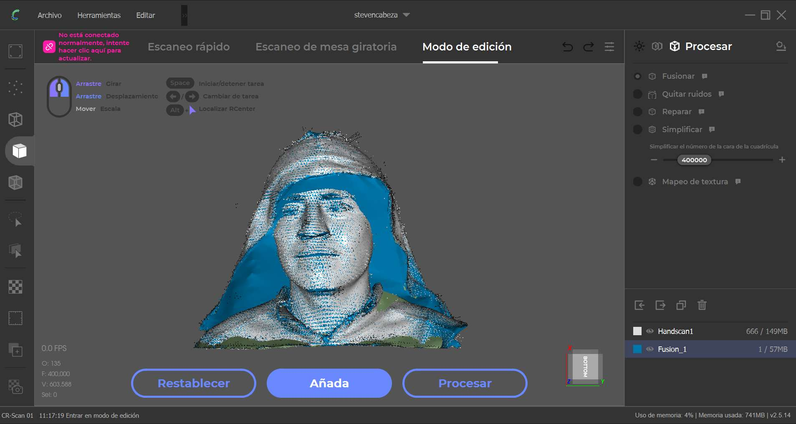
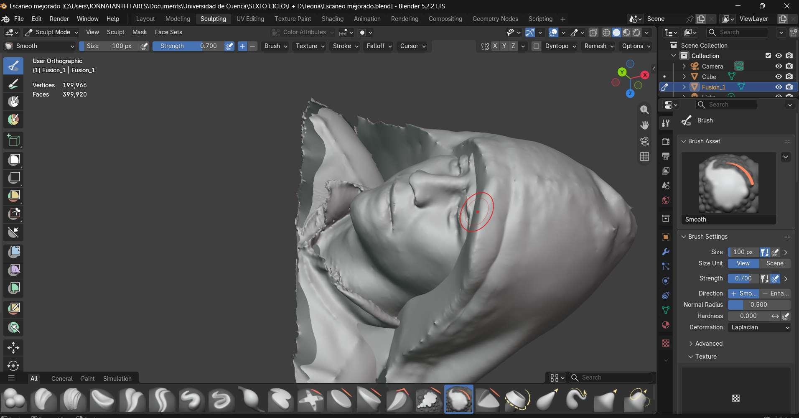
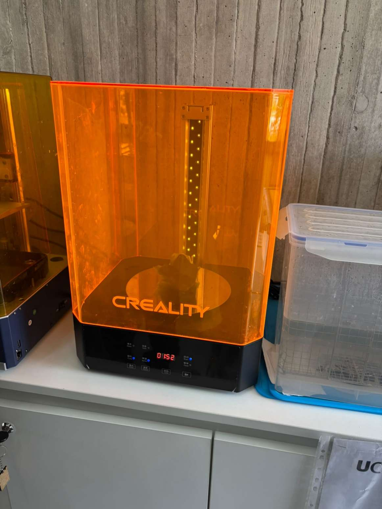
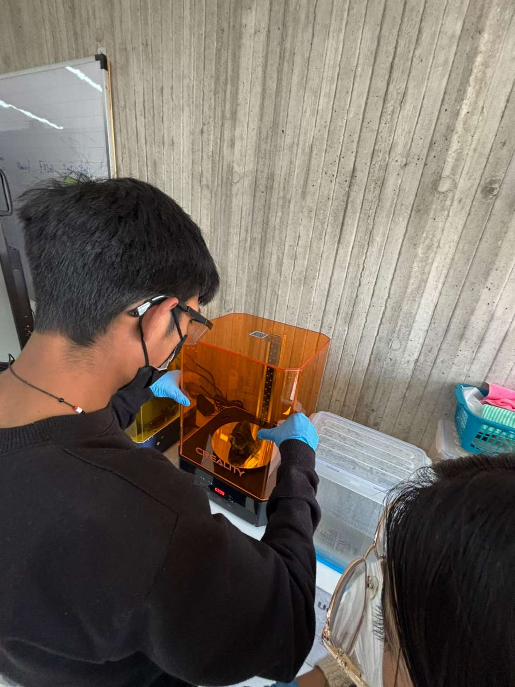
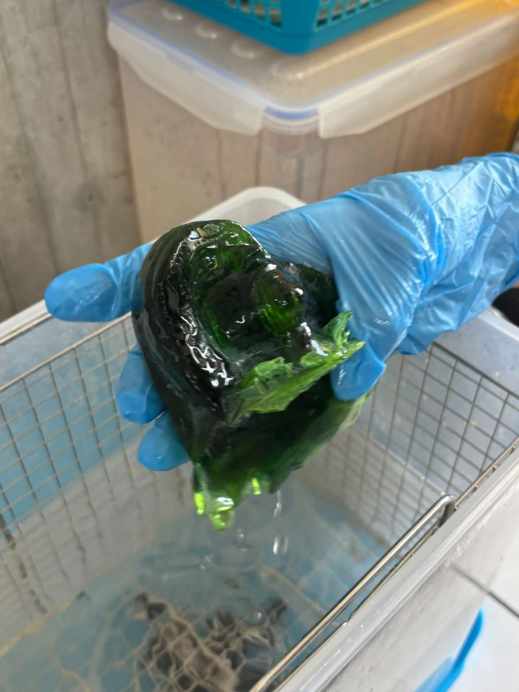

Week 05
3D Scanning and Printing - Face scan, mesh cleanup in Blender and resin printing
Introduction
3D scanning records the geometry of an object and produces a digital representation that can later be reviewed, edited or prepared for fabrication. The quality of the result depends, among other factors, on the correct use of the equipment and on following the instructions during capture.
This week we scanned a classmate's face with a 3D scanning camera and the CR Studio software, cleaned the mesh in Blender, prepared it in Chitubox and printed it in resin. The practice covered the whole path from a real person to a physical piece.
1. 3D Scanning with CR Studio
Capturing a face with a 3D scanning camera
We used a 3D scanning camera together with the CR Studio program to scan a classmate, focusing on the face. The procedure followed the instructions of the engineer, with the purpose of obtaining a digital model of the captured surface.
This practice let us become familiar with three-dimensional data acquisition and understand that, after capturing an object or a person, the file may need adjustments before it can be used in other applications. It also showed the importance of scanning in an orderly way to get a more complete representation.



2. Editing the Scan
From the raw capture to a cleaner model
After scanning, the file was processed in the edit mode of CR Studio, where the options to merge, remove noise, repair and simplify the mesh are available. Then it was imported into Blender, an application for editing and refining three-dimensional models. There the captured geometry was reviewed and the visible imperfections were corrected, with the goal of improving the presentation and the continuity of the model surface.
Editing after the scan is important because the initial file can contain irregularities, incomplete areas or details that need cleaning. Modeling tools make it possible to prepare the digital object for review, export or possible fabrication, depending on the characteristics of the file and the process to be used.



As a result of the editing, we obtained a visually cleaner and more defined model, ready to be exported for the preparation and fabrication stages.
3. Preparation and Resin Printing
From Chitubox to the finished piece
Once the face was scanned in CR Studio, it was loaded into Blender to improve the quality of the scan, removing imperfections so that it came out tidier. Then the finished design was loaded into Chitubox to set its size and place supports where necessary, so the piece is not damaged during printing. After the adjustments, the file is saved on a USB flash drive.
Steps followed for printing and post-processing:
- Put on latex gloves, a mask and goggles to protect the eyes.
- Remove the printer's vat, take off the UV protective cover and pour photosensitive resin (green) into the steel vat up to the mark on the vat.
- Put the vat back into the resin printer, place the UV protective cover again, insert the USB drive with the file and let it print for the time the printer sets.
- When printing finishes, remove the UV cover, take apart the build plate and the vat, and let the remaining resin drip off the plate and the printed figure. Then carefully remove the figure from the plate with a spatula so it does not break from a knock or a fall.
- Wash the figure and the build plate. The resin left in the vat is strained through a small filter and poured back into the bottle so it can be reused later.
- Dry the figure with a cloth or absorbent paper, and also dry the plate, the vat, the filter and the spatula. Then put the figure in the washing machine for two minutes and repeat this at least 3 times.
- Dry it again and cure it in the curing machine for two minutes, 3 more times. Only after all these steps can the figure be handled with bare hands.
4. Resin Printing Results
Printer, handling and washing
These photos show the resin printer, the preparation of the print and the printed piece being removed and washed after printing.



Tools and Equipment
- Scanning: 3D scanning camera and CR Studio
- Mesh editing: Blender
- Print preparation: Chitubox (size and supports)
- Printing: resin printer, green photosensitive resin, washing and curing machine
Conclusion
This week we understood that 3D scanning and 3D printing complement each other: first a real object is captured digitally, then the model is improved, and finally it is prepared for its physical reproduction. The face scan in CR Studio, the cleanup in Blender and the print in resin covered the whole workflow.
The final quality depends on the initial capture, on the editing and on the chosen fabrication parameters, such as the supports in Chitubox. Resin printing also requires careful handling: protection, washing and curing steps must be followed in order before the piece can be touched safely.
Bibliography
- Creality. (2026). CR Studio: 3D scanning software user guide. Shenzhen Creality 3D Technology Co., Ltd. creality.com
- Blender Foundation. (2026). Blender Manual: Sculpt mode. docs.blender.org/manual
- CHITUBOX. (2026). CHITUBOX Basic user guide: supports and slicing for resin printing. chitubox.com
- Fab Academy. (2026). 3D Scanning and Printing: weekly class and assignment. fabacademy.org
- Industrial FabLab Ucuenca. (2026). Class material, Week 05: 3D scanning and resin printing. Universidad de Cuenca.